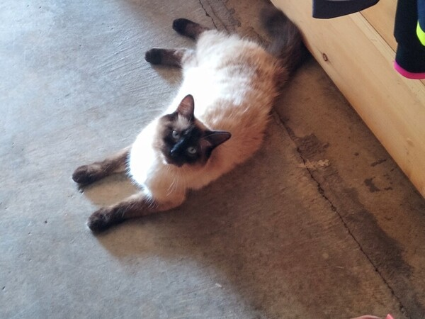

Siamese cats have a range of point colors, but the most common include:
chocolate
lilac point
seal
blue
Because of their blue eyes, they may not see as well as other breeds in low light.

More Cool Facts
Known for their conversational nature, Siamese cats have a deep, loud voice and enjoy chatting with people.
In the 1960s, a pair of Siamese cats living in the Dutch Embassy in Moscow began scratching a wall in the ambassador's office. Behind that wall were small microphones the cats could hear. The two cats were credited with revealing an espionage plot.
About Seal Points
Seal point is the most common color of Siamese cat. Seal points have a dark brown or black mask on the face, ears, tail and paws, and have a cream or light-colored body.